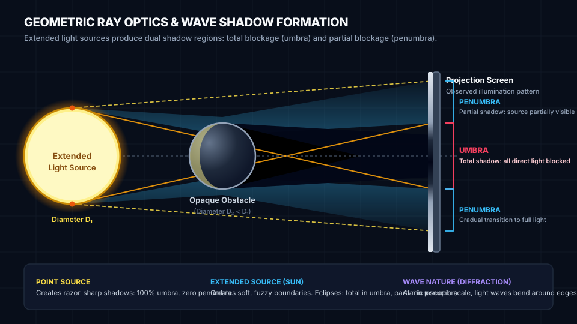

Physics · Waves & Sound · Foundational
Light & Shadows
In a uniform transparent medium, light travels in straight lines known as rays. When an opaque obstacle obstructs an extended light source (like the Sun or an incandescent filament), it casts three distinct geometric shadow zones: a completely occluded umbra, a soft graduated penumbra, and an exterior antumbra.
1. Ray Optics & Shadow Formation
Because photons travel along straight geometric trajectories, shadows map the physical shape of obstacles. The character of the shadow depends directly on whether the light source is a point or an extended body:
- Point light source: Emits rays from an infinitesimally small location. Every ray that strikes the obstacle is stopped, producing a single, razor-sharp shadow boundary with an umbra only.
- Extended light source (the real world): Different points on the light source cast overlapping rays at slightly different angles, creating two distinct zones:
- Umbra: The central core where all direct rays from every part of the light source are completely blocked. An observer inside experiences total eclipse (100% darkness).
- Penumbra: The surrounding outer fringe where some rays are blocked while others pass unobstructed. The light dims gradually from full illumination to total darkness.
- Antumbra: The region directly beyond the apex of the umbra cone where the obstacle appears completely enclosed within the luminous disk, forming an annular "ring of fire".

2. Interactive Shadow Optics Simulator
Drag the circular obstacle or the white projection screen to see how the umbra cone and penumbra expand or contract. Four tangent rays mark the exact boundary lines.
3. Astronomical Shadows & Crater Topography
Astronomers use straight-line shadow geometry to measure the elevations of alien mountains and the depths of lunar craters. Near the Moon's terminator line (the division between lunar day and night), sunlight strikes at a grazing low angle, casting dramatic elongated shadows that reveal rugged topography:
Worked Example: Calculating the Moon's Umbra Cone Length
Because light travels in straight rays, we can model shadow geometry using similar triangles. When an opaque sphere of radius \(R_m\) blocks light from a distant spherical source of radius \(R_s\) separated by distance \(D\), the length of the umbral shadow cone \(L_u\) satisfies:
Sample Problem: The Sun has radius \(R_s = 696,340\text{ km}\). The Moon has radius \(R_m = 1,737\text{ km}\). The average Sun-Moon distance is \(D = 149,600,000\text{ km}\).
- Calculate the length of the Moon's umbral cone \(L_u\).
- Given that Earth-Moon distance varies between \(363,300\text{ km}\) (perigee) and \(405,500\text{ km}\) (apogee), determine what type of solar eclipse occurs at each orbital position.
Step 1: Calculate the effective radius difference.
Subtract the Moon's radius from the Sun's radius:
\(R_s - R_m = 696,340\text{ km} - 1,737\text{ km} = 694,603\text{ km}\).
Step 2: Substitute values to find umbra length \(L_u\).
\(L_u = \frac{1,737\text{ km} \times 149,600,000\text{ km}}{694,603\text{ km}} = \frac{2.59855 \times 10^{11}}{694,603} \approx 374,106\text{ km}\).
Step 3: Compare with Moon-to-Earth distances.
• At Perigee (\(d = 363,300\text{ km}\)): Distance from Moon to Earth is strictly less than the umbra cone length (\(363,300\text{ km} < 374,106\text{ km}\)). The umbra reaches Earth's surface, creating a Total Solar Eclipse.
• At Apogee (\(d = 405,500\text{ km}\)): Distance from Moon to Earth exceeds the umbra cone length (\(405,500\text{ km} > 374,106\text{ km}\)). The umbra tapers to a point in empty space before reaching Earth. Observers on Earth stand in the antumbra, witnessing an Annular Solar Eclipse ("ring of fire")!
Check your understanding: If the Moon were 20% larger, could annular solar eclipses ever happen?
No! A 20% larger Moon would increase its umbra cone to \(\sim 450,000\text{ km}\). Because \(450,000\text{ km}\) is greater than the Moon's maximum apogee distance (\(405,500\text{ km}\)), the umbra would always reach Earth's surface during central eclipses, making all central solar eclipses total!
5. Practice Problems
Easy1. What is the defining characteristic of an umbra?
Easy2. If a point light source (like a microscopic LED) casts a shadow of a ball onto a wall, what kind of shadow forms?
Medium3. An obstacle is moved closer to an extended light source (further from the screen). What happens to the penumbra on the screen?
Challenge4. A 10 cm diameter opaque disk is held 50 cm from a point light source. A projection screen is located 150 cm from the source. What is the diameter of the shadow on the screen?